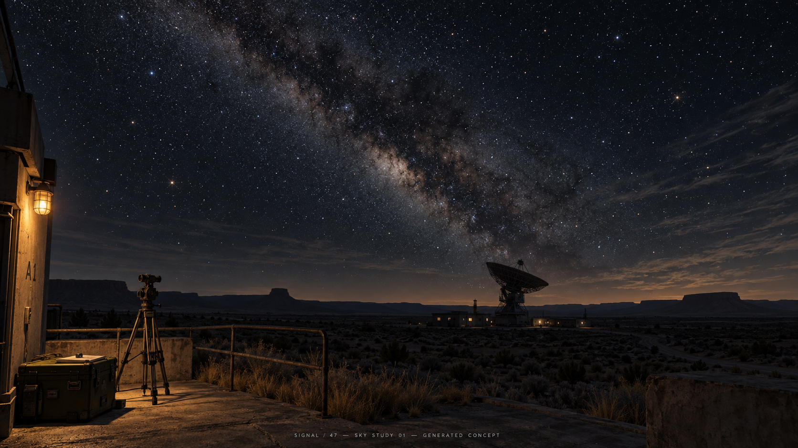
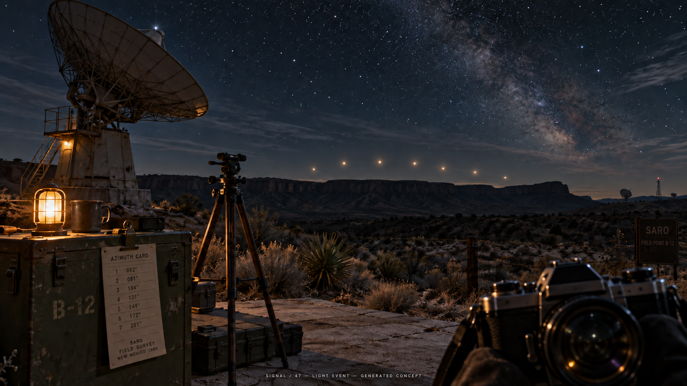
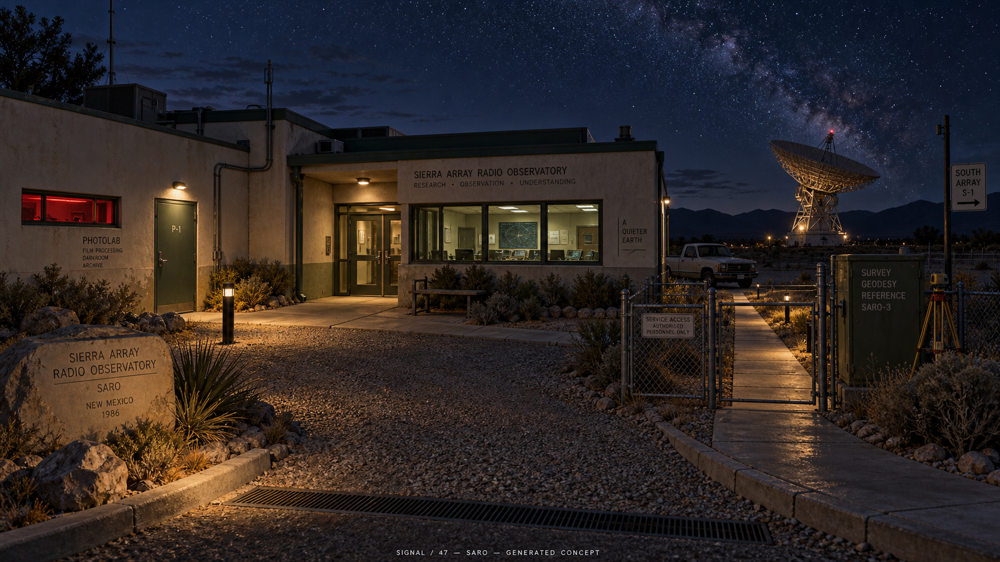
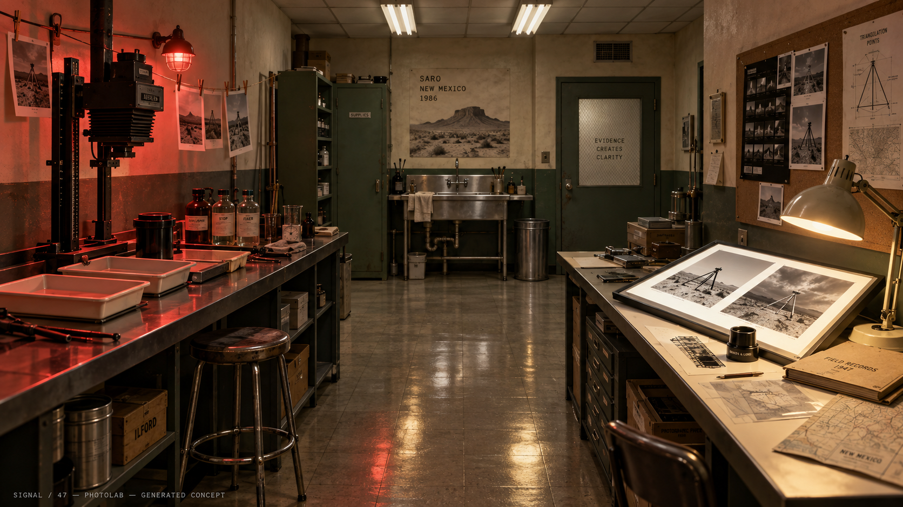
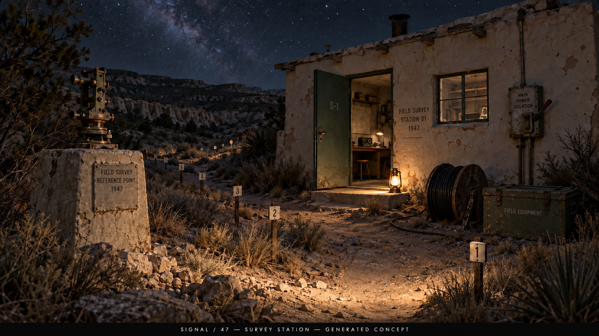
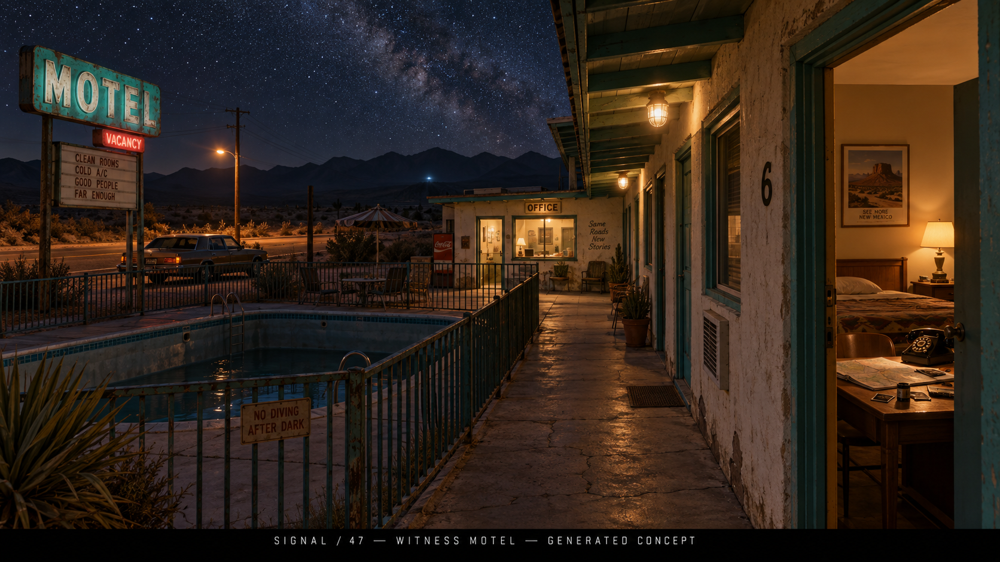
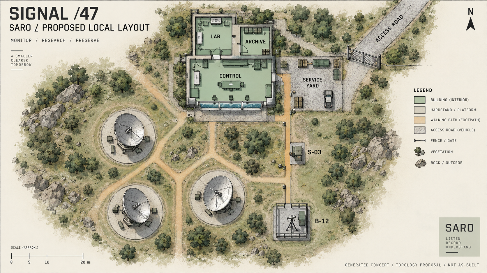
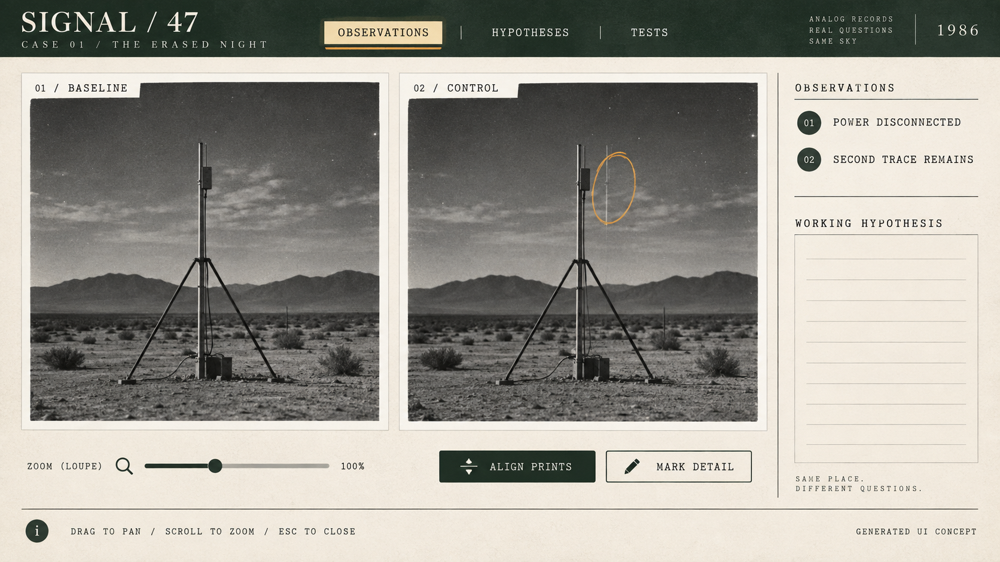

Nattehimmelen
Små, skarpe stjerner og en lagdelt Melkevei over et lesbart ørkenlandskap.
Normal spillsikt skal være mer dempet enn dette fotografiske uttrykket. Stjerneplasseringene er illustrative.
SIGNAL / 47 · KONSEPTSERIE 11 · 10.–11. SEPTEMBER 2026
En undersøkelse som ble stanset i 1947, begynner å gi nye resultater i 1986. Du må finne ut hvem som avbrøt forsøket — og om dine egne målinger hjelper noe med å fullføre det.
Åtte genererte konseptbilder og et nytt historieforslag. Dette er ikke skjermbilder fra spillet eller vedtatt kanon. Himmelen, stedene og grensesnittet er produksjonsforslag. Klikk på et bilde for full størrelse; bruk nettleserens tilbakeknapp for å vende tilbake.

Små, skarpe stjerner og en lagdelt Melkevei over et lesbart ørkenlandskap.
Normal spillsikt skal være mer dempet enn dette fotografiske uttrykket. Stjerneplasseringene er illustrative.

Et fysisk feltpunkt, kjente siktelinjer og en lysrespons spilleren kan teste med sitt eget utstyr.
Azimutkortet er en plassholder. Syv lys er komposisjon; 4/7 forblir det etablerte pulsmønsteret.

Samlet arkitektur: kremfarget puss, grønne dører, fotolab, servicevei og store antennesilhuetter.
Forslag til romlig og visuell sammenheng. Plasseringene er ikke en oppmåling av spillets scene.

En fysisk arbeidskjede fra lystett filmhåndtering til våtbenk, tørking og tørr bevisundersøkelse.
Brukshøyder, filmprosedyre og lys må løses i spillet. Gulvreflekser og rekvisitter er visuelle mål.

En gammel feltstasjon med transit, faste merker og frakoblet kabel. Spilleren rekonstruerer forsøket.
Ny foreslått lokasjon fra 1947-sporet. Ikke et sted som allerede er bygget og spilltestet.

Et bebodd sted utenfor SARO: telefon, negativer og et avtalt møte med den som signerte rapporten.
Senere kapittel, et annet sted i regionen. Små slagord og merkevarer i bildet er illustrative.

Kontrollrom, lab og arkiv knyttes til servicegård, S-03 og B-12 gjennom korte, tydelige forbindelser.
Topologiforslag. Skala, nye rom og antenneposisjoner må erstattes med verifisert geometri før bruk som spillkart.

Store sidevise fotografier, zoom, markering og et tydelig skille mellom observasjon og hypotese.
Viser tilstanden etter et funn. Sirkel og konklusjon må komme fra spillerens handlinger. Spillet skal bruke ekte, uforanderlige eksponeringer.